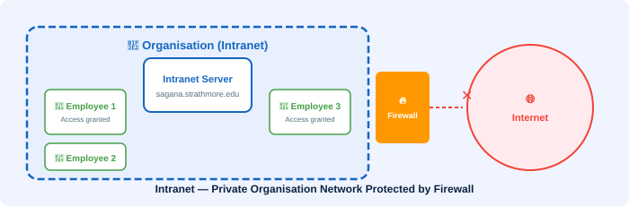

🏢 Intranet
A private internal network accessible only within an organisation

An intranet consists of web pages and resources that are only available inside an organisation. It uses Internet technologies (HTTP, HTML, browsers) but restricts access to authorised internal users only.
What is an Intranet?
An intranet is a private network contained within an enterprise or organisation. It uses the same technologies as the public Internet — web browsers, web servers, HTML, and HTTP — but the content is restricted to members of that organisation.
A real-world example from Strathmore University is the internal portal at https://sagana.strathmore.edu/ — accessible only to Strathmore staff and students on campus or via VPN.
What Intranets Are Used For
- 📢 Internal announcements and company news
- 📄 Document management and shared files
- 👤 Employee HR portals (leave management, payroll slips)
- 📅 Internal calendars and event scheduling
- 💬 Internal messaging and collaboration tools
- 🗃️ Company knowledge bases and wikis
Intranet vs Internet vs Extranet
| Network | Access | Users |
|---|---|---|
| Internet | Public — open to everyone | General public worldwide |
| Intranet | Private — restricted to inside the organisation | Employees/members only |
| Extranet | Partially restricted — selected external parties | Partners, suppliers, clients |
How Intranets Are Secured
🛡️ Security Mechanisms
- Firewalls — prevent unauthorised external access
- VPN (Virtual Private Network) — allows remote workers to securely access the intranet
- Username & Password authentication — verifies user identity
- IP filtering — only allows connections from organisation network ranges
💡 Key Fact: Intranets dramatically reduce internal communication costs and improve information sharing within organisations. They are categorised as special-purpose web applications alongside extranets and portals.